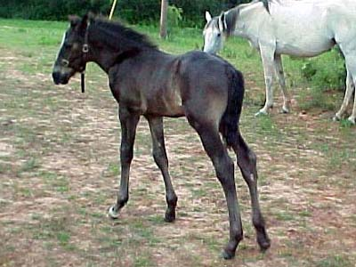
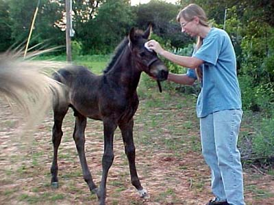
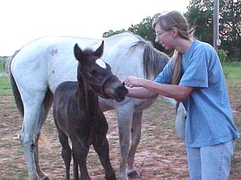
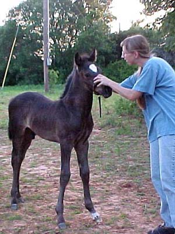
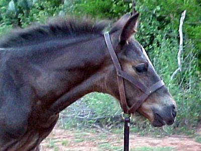
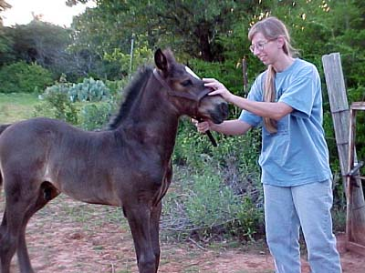

We borrowed the halter from Susan.
It should be a while before he outgrows it.

He's still very leggy, but his butt
is developing.

He's gotten used to people and likes
to be scratched.

Nipping and chewing are starting to
be an issue. Everything must go in his mouth...

Haltering wasn't that difficult. I
think leading will take a lot more patience.

His muzzle and eyes are shedding out
to black, so we have our fingers crossed.

He can be very playful, and isn't
concerned about lifting his front end off the ground. We discourage any
playing like that around people. His mother seems to let him get away with
anything.